UDN
Search public documentation:
CreatingTerrainJP
English Translation
Interested in the Unreal Engine?
Visit the Unreal Technology site.
Looking for jobs and company info?
Check out the Epic games site.
Questions about support via UDN?
Contact the UDN Staff
Interested in the Unreal Engine?
Visit the Unreal Technology site.
Looking for jobs and company info?
Check out the Epic games site.
Questions about support via UDN?
Contact the UDN Staff
初めてのテレイン作成
ドキュメントの概要： テレインを作成する方法の紹介 ドキュメントの変更ログ： Jason Lentz （DemiurgeStudios）により最終変更｡2110ビルド向けに文書をより管理しやすい量に分割｡原文作成者は Lode Vandevenne （UdnStaff）。はじめに
ここでは、テレインを空のレベルから作成する方法を説明します｡本文は、テレインの作成は初めてでも、「UnrealEdのインターフェイス」、テクスチャおよびアクタ ブラウザの使い方は理解している方を対象にしています。テレイン用マップの準備
マップにテレインを作成する場合、とても広いエリアが必要です｡非常に大きなキューブ、例えば65536�65536�65536のキューブをサブトラクトすると、UnrealEd でサポートするサイズは 524288�524288�524288 まで広がります。しかし、ここまで広いスペースを作り出すのは好ましくありません｡ 中にテレインを作成するキューブは TerrainZone （テレイン ゾーン）でなければなりません｡それには ZoneInfo （ゾーン情報） が必要です｡アクタクラス ブラウザを開き、[Info] （情報） から [ZoneInfo] を選びます｡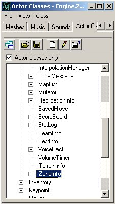
ZoneInfo をキューブの中心付近に配置します｡2Dのオーバーヘッド ビューの中心で右クリックし、[Add ZoneInfo Here] （ゾーン情報をここに追加） を選択すると、ZoneInfo が自動的にキューブの中心に移動します｡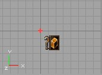
ZoneInfo 上で右クリックし、[ZoneInfo Properties] （ゾーン情報プロパティ） を選択します｡ここで [ZoneInfo] を展開し、[bTerrainZone] を [True] に設定します｡これで、ゾーンにテレインが含まれることをエディタが認識します｡ [ZoneLight] （ゾーン ライト） を展開して [AmbientBrightness] （環境輝度） を128に設定します｡これにより、ビルドした際にテレインが見えるようになります｡ AdditionalTerrainTips (その他のテレインのヒント) では、レベル内のテレインの見栄えが非常によくなる [SunLight] （サンライト） の作成方法について説明します｡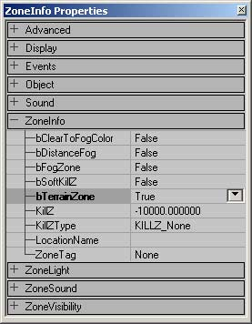
[LevelInfo] （レベル情報） は [bTerrainZone] に設定してもうまくいかないので、必ず [ZoneInfo] を使います。一度このゾーンを [TerrainZone] に設定すると、ゾーン内にテレインを必要なだけ用意できますが、TerrainZone でないゾーンへ流出してしまったテレインは非 TerrainZone では見えません｡ 次に、この大きなボックスの側面にテクスチャを貼ります。このテクスチャはテレインに使用しないものかを確認してください｡というのも、後でテレインを作成した際に、テレインと箱の側面を区別できるようにするためです｡初めのテレイン
それでは実際にテレインを作成してみましょう｡まず、左にあるツールバーのこのボタンで [Terrain Editing] （テレインの編集） の [Tool] （ツール） を開き、表示されたウィンドウで [Terrains] （テレイン） のタブが選択されていない場合は選択します｡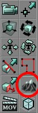
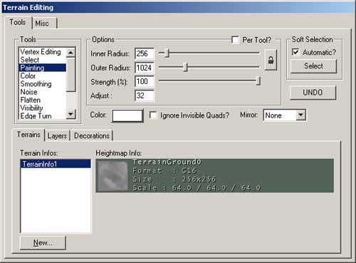
これが [Terrain Editor] （テレイン エディタ） ウィンドウです。ウィンドウの左下の ボタンを押すと、[New Terrain] （新規テレイン） のウィンドウが表示されます｡
ボタンを押すと、[New Terrain] （新規テレイン） のウィンドウが表示されます｡
 変更する必要があるのは [Name] （名前） のフィールドだけです。 [TerrainHeightMap] （テレイン ハイトマップ） の名前を継承してもよいのですが、固有の名前を付ければエンジンが混同したり、他のテクスチャに上書きしてしまうのを防げます｡その他のフィールドはそのままでよいのですが、変更したい場合は、次のガイドラインを参考にしてください。
変更する必要があるのは [Name] （名前） のフィールドだけです。 [TerrainHeightMap] （テレイン ハイトマップ） の名前を継承してもよいのですが、固有の名前を付ければエンジンが混同したり、他のテクスチャに上書きしてしまうのを防げます｡その他のフィールドはそのままでよいのですが、変更したい場合は、次のガイドラインを参考にしてください。 - Package （パッケージ） - 独自のパッケージを作成する場合、その名前が他のテクスチャ パッケージや静的メッシュ パッケージと同じでないことを確認してください｡ここで新しいパッケージを作成した場合、エディタを開いてレベルをロードするたびに、このパッケージのロードが必要になります｡
- Group （グループ） - HeightMap （ハイトマップ） のグループ割りはさほど重要ではなく、グループの名前はどのようなものでも構いません｡
- Name （名前） - HeightMap に固有の名前を付けておくと、後で作成するテレインと区別できて便利です｡さらに、上書きされたり、同じパッケージ内の他のテクスチャを上書きしてしまうのを防ぐこともできます｡
- XSize & YSize （XサイズとYサイズ） - これらの値は、実際のテレインのサイズではなく、HeightMap のサイズのみを定義するものです。数値が2の倍数であることを確認してください｡各 HeightMap のピクセルごとにテレインにクワッドが作成され、ピクセルの暗さ加減によりテレインの高さが決まります｡
- Height （高さ） - テレイン全体に割り当てられたソリッドのグレースケール値によって、その色が示す高さを定義します｡ 32768 という数値は設定値領域のちょうど真中（正確に 2^16 の1/2）であるため、このままにしておくのが良いでしょう｡
TerrainMap （テレインマップ）
テレインの TerrainMap とは、高い場所から低い場所まで、その分布を定義する HeightMap です｡つまりテレインに、丘、山、峡谷そして谷などを作成します。 TerrainMap は16ビットのテクスチャですが、エディタで8ビットのテクスチャをインポートすることもできます。ただし、テレイン編集時には16ビットに変換する必要があります｡ TerrainMap で使用するテクスチャでは、パレット上の黒または最初の色がテレインの最も低い場所を表します｡一方、パレット上の白または最後の色が最も高い場所を表します｡ほとんどの場合16ビットまたは８ビットのグレースケールのテクスチャをテレインマップにインポートすることになりますが、8ビットのパレット制御のテクスチャを使うこともできます｡理論上は 2048�2048 テクスチャまで使えますが、このサイズのテクスチャを TerrainMap に使うと、とても大きなマップのライティングをリビルドするよりも時間がかかってしまいます｡基本的には 256�256 のテクスチャサイズが適当でしょう｡ [Terrain Editing Tools] （テレイン編集ツール） により TerrainMap は自動作成され、MyLevel （マイレベル） パッケージのテクスチャ ブラウザで指定したグループや名前で確認できます。 TerrainMap 上の [Paint Tool] （ペイント ツール） （「テレインマップの編集」の文書で説明）を使ってペイントすると、このテクスチャは更新されます｡ 例：黒から白への線形フェードであるこのテクスチャは、山頂の尖った山を作ります｡このテクスチャはPSP硬度が0のブラシで作成されています｡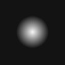
 このテクスチャは硬度50のブラシで作成されており、より平らな山を作ります：
このテクスチャは硬度50のブラシで作成されており、より平らな山を作ります：

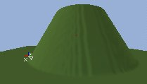
テクスチャにフェード設定しない場合、山の側面は垂直になります：
 このようなテクスチャはとても細い峰を作るので、草のように見えます｡ただし、草を作る際には良い方法ではありません：
このようなテクスチャはとても細い峰を作るので、草のように見えます｡ただし、草を作る際には良い方法ではありません：
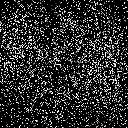
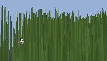
ベストな HeightMap テクスチャは下のように複雑なものです。
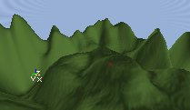
テクスチャの追加
テレインに、TerrainMap で作成したジオメトリ上に表示するテクスチャが必要です。 [Texture Browser] （テクスチャ ブラウザ） を開いて、草や土などテレインに使用するテクスチャを選択します。 [Terrain Editing] （テレインの編集） ウィンドウに戻り、今度は [Layers] （レイヤー） のタブを選択します｡ [Layers] タブ内で一番上にある最も空のレイヤーを選び、ウィンドウの右側にある ボタンを押して新しいレイヤーを作成します｡
 TerrainMap 同様、変更する必要のある唯一のフィールドは [Name] （名前） です。また、やはり TerrainMap と同様に、編集する場合は以下のガイドラインに従ってください。
TerrainMap 同様、変更する必要のある唯一のフィールドは [Name] （名前） です。また、やはり TerrainMap と同様に、編集する場合は以下のガイドラインに従ってください。
- Package （パッケージ） - TerrainMap で作成したパッケージと同じ名前にします｡これらのテクスチャのうちの一つを使う場合、テレインマップのものも一緒に使う可能性が高いためです｡
- Group （グループ） - HeightMap （ハイトマップ） のグループ割りはさほど重要ではなく、グループ名はどのようなものでも構いません｡
- Name （名前） - 上でも述べたように、エンジンが上書きすることがないよう、テクスチャには固有の名前を付けます｡
- AlphaHeight （アルファ ハイト） と AlphaWidth （アルファ幅） - これらの値は必ず使用中のテクスチャ寸法に合わせるようにします｡合わせなければ、テクスチャは標準グリッド上でスポットとしてしか表示されません｡
- AlphaFill （アルファ フィル） - レイヤー群のうちでも、このテクスチャ上にある複数レイヤーにおけるこのテクスチャの透明度を定義します。デフォルト設定の[0]が適当です（2110 ビルドを使用している場合）。
- ColorFill （カラー フィル） - この設定は無視してください｡旧バージョンまでは、テレインの色を作成に利用しました｡
- UScale （Uスケール） とVScale （Vスケール） - テレインに適用される際のテクスチャ マップのスケールに作用します｡作成時にうまくできなくても心配しないでください｡後から簡単な編集で適当なスケールに修正できます｡
 レイヤーの詳細については、[EditingTerrainLayers] （テレイン レイヤーの編集） の文書をご覧ください｡
レイヤーの詳細については、[EditingTerrainLayers] （テレイン レイヤーの編集） の文書をご覧ください｡
マップのリビルド
これでテレインのすべての基本材料が揃いましたが、最後にエディタでこれらを更新する必要があります｡ [Rebuild All] （すべてをリビルド） ボタン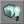
を押すと、テレインが可視の状態になります｡今はまだ極めてフラットです｡テレインが見えない場合は、カメラがテレイン上部に来ているかを確認します｡これは、テレインは通常、下側からは見えないためです｡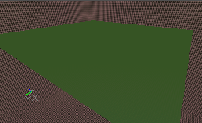
テレインに丘や山などを追加して、もう少し変化をつけたい場合もあるでしょう。次の項では、テレインすべてかその一部を利用して、下のイメージのようにもっと面白味のある景色を簡単に生成する方法を説明します｡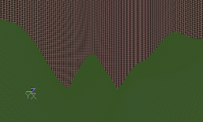
テレイン ジェネレータ
ランダムなテレインを作成する簡単な方法に [Terrain Generator] （テレイン ジェネレータ） があります｡すべてのテレインを地形として作りこむのか、選択したエリアのみにランダムな地形を作成するかを決めます｡このツールを使うには、[Select Tool] （ツールの選択） に切り替えます（テレインすべてを使う場合は、ツールをオープンにするだけで、このツールは必要ありません）。 次に[Misc.]（その他）のタブを開いて、[Terrain Generator] にアクセスします。
次に[Misc.]（その他）のタブを開いて、[Terrain Generator] にアクセスします。
 [Build] （ビルド） ボタンを押し、[Use Entire Heightmap] （すべてのハイトマップを使う） が無効の場合は選択した場所に、有効の場合はテレイン全体に、ランダムな地形を生成します｡
値が2つあります｡ [Steps] （ステップ） は作成されるハイト差の平均を決定します｡左のスクリーンショットの [Steps] は 50 で、右の [Steps] は 5000 です。 [Strength] （強さ） の値は両方のスクリーンショットで250です。
[Build] （ビルド） ボタンを押し、[Use Entire Heightmap] （すべてのハイトマップを使う） が無効の場合は選択した場所に、有効の場合はテレイン全体に、ランダムな地形を生成します｡
値が2つあります｡ [Steps] （ステップ） は作成されるハイト差の平均を決定します｡左のスクリーンショットの [Steps] は 50 で、右の [Steps] は 5000 です。 [Strength] （強さ） の値は両方のスクリーンショットで250です。
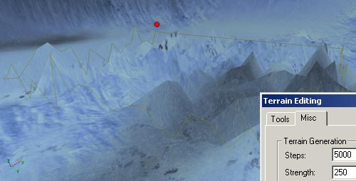
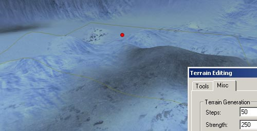
[Strength] の値は頂上のサイズを決定します｡左のスクリーンショットは [Strength] の値が100で、右の値は 1000 です。つまり、2番目のスクリーンショットの丘は、1番目のものより 100 倍幅があることになります｡ [Steps] の値は両方のスクリーンショットで50です。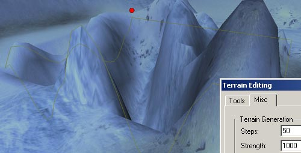
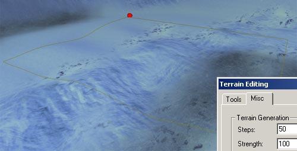
[Terrain Generator] （テレイン ジェネレータ） にはまだいくつかのバグがあります｡この操作を HeightMap すべてに適用しようとしても、選択プロンプトが表示され、この操作を取り消すと、HeightMap 全体を変更しタイにも関わらず選択の範囲内のみで取り消されます｡また [Terrain] オプションの [Move Actors] （アクタの移動） も作動しません｡ HeightMap 全体にテレインを生成した後、開いたマップのすべてのテレインがBSPホールで埋め尽くされているように見えます｡エディタを閉じてまた開くと、この問題は解決されます｡また別の問題として、[ビルド]ボタンを押しても生成されたテレインが更新されないことがあります｡マニュアルで更新するには [Paint Tool] (ペイント ツール） に切り替え、[Strength] を１に設定してからエリアをペイントします｡